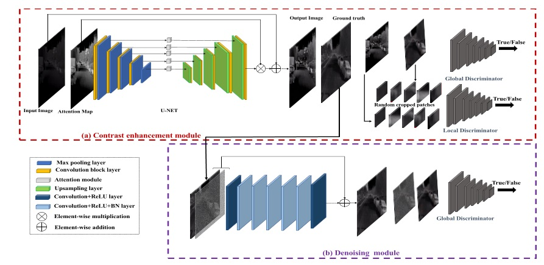
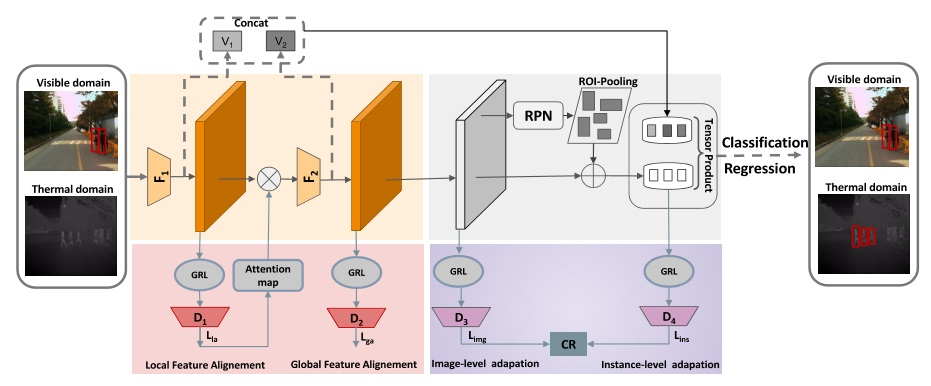
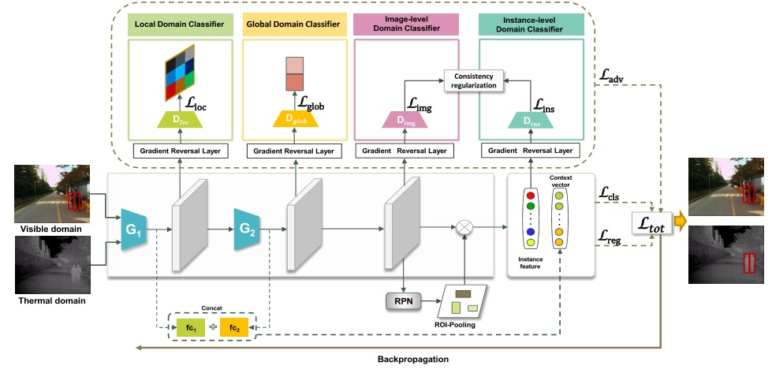
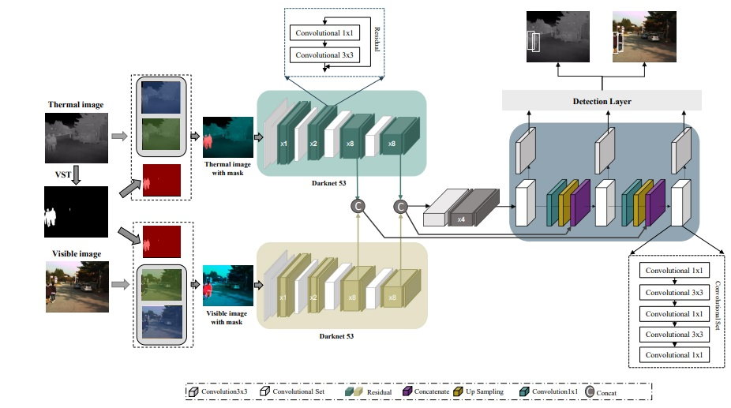

Mohamed Amine MARNISSI
Research Engineer
Computer vision & Artificial Intelligence
Biography
Mohamed Amine Marnissi is a research engineer and freelancer with a Ph.D. in computer system technology. I received my engineering degree in computer science and a master's degree in artificial intelligence and computer vision. I has developed expertise in deep learning and computer vision, working on research projects using deep learning to address complex problems in computer vision such as object detection, face recognition, and surveillence robotic vision. I has published articles in scientific journals and presented his work at conferences and workshops.
Formation
➤ [2019/2022]
PhD student in computer vision and artificial intelligence in National Engineering School of Sfax (ENIS), Tunisia .
➤ [2017/2018]
Master's degree in Intelligent and Communicating Systems (ICS), National School of Engineering of Sousse (ENISo), Tunisia .
➤ [2013/2016]
Diploma in Computer Science Engineering, National Engineering School of Sfax (ENIS), Tunisia.
➤ [2011/2013]
Preparatory Institute in Mathematics and Physics in Preparatory Institute for Engineering Studies of Bizerte (IPEIB), Tunisia.
Publications
-

Thermal Image Enhancement using Generative Adversarial Network for Pedestrian Detection
Mohamed Amine Marnissi, Hajer Fradi, Anis Sahbani, Najoua Essoukri Ben Amara
25th International Conference on Pattern Recognition 2020 (ICPR)@inproceedings{marnissi2021thermal, title={Thermal Image Enhancement using Generative Adversarial Network for Pedestrian Detection}, author={Marnissi, Mohamed Amine and Fradi, Hajer and Sahbani, Anis and Amara, Najoua Essoukri Ben}, booktitle={2020 25th International Conference on Pattern Recognition (ICPR)}, pages={6509--6516}, year={2021}, organization={IEEE}}
-

Unsupervised thermal-to-visible domain adaptation method for pedestrian detection
Mohamed Amine Marnissi, Hajer Fradi, Anis Sahbani, Najoua Essoukri Ben Amara
Pattern Recognition Letters(PRL) 2021
@article{marnissi2021unsupervised, title={Unsupervised thermal-to-visible domain adaptation method for pedestrian detection}, author={Marnissi, Mohamed Amine and Fradi, Hajer and Sahbani, Anis and Amara, Najoua Essoukri Ben}, journal={Pattern Recognition Letters}, year={2021}, publisher={Elsevier}}
-

Feature distribution alignments for object detection in the thermal domain
Mohamed Amine Marnissi, Hajer Fradi, Anis Sahbani, Najoua Essoukri Ben Amara
The Visual Computer Journal 2022
@article{article, author = {Marnissi, Mohamed and Fradi, Hajer and Sahbani, Anis and ESSOUKRI BEN AMARA, Najoua}, year = {2022}, month = {02}, title = {Feature distribution alignments for object detection in the thermal domain}, journal = {The Visual Computer} }
-


Bispectral Pedestrian Detection Augmented with Saliency Maps using Transformer
Mohamed Amine Marnissi, Hajer Fradi, Anis Sahbani, Najoua Essoukri Ben Amara
the 18th International Joint Conference on Computer Vision, Imaging and Computer Graphics Theory and Applications 2022
@inproceedings{DBLP:conf/visapp/MarnissiHFSA22, author = {Mohamed Amine Marnissi and Ikram Hattab and Hajer Fradi and Anis Sahbani and Najoua Essoukri Ben Amara}, title = {Bispectral Pedestrian Detection Augmented with Saliency Maps using Transformer}, booktitle = {Proceedings of the 17th International Joint Conference on Computer Vision, Imaging and Computer Graphics Theory and Applications, {VISIGRAPP}}, year = {2022}}
Projects